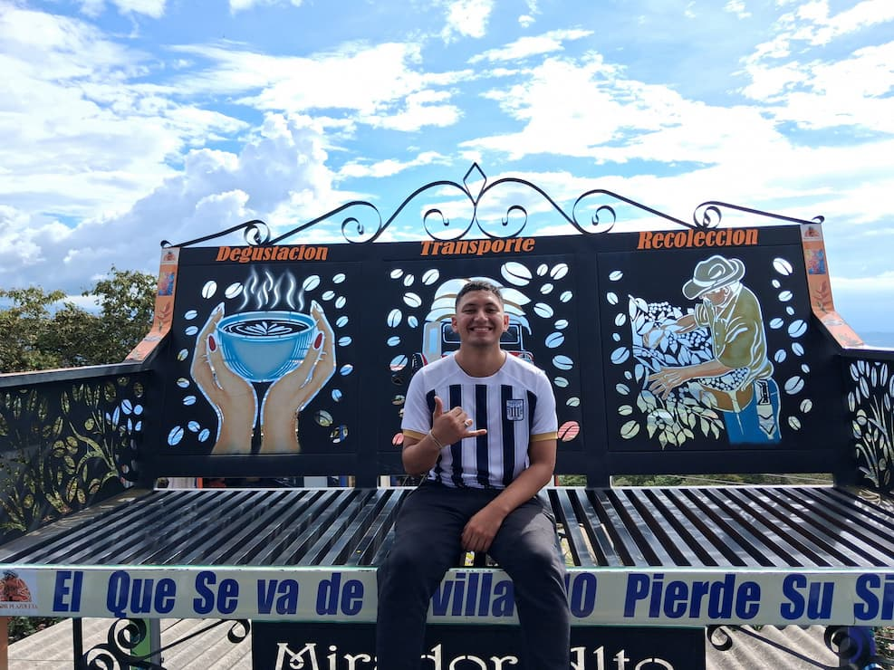

Mauricio Galindo Zuñiga | WDD 130

Hello! My name is Mauricio Galindo and I am from Cali, Colombia. I enjoy play sports specially the soccer. I served a mission in Lima, Peru. I realliy Love de Peruvian and Colombian food. I like dancing Cali-style salsa and climbiing mountains.